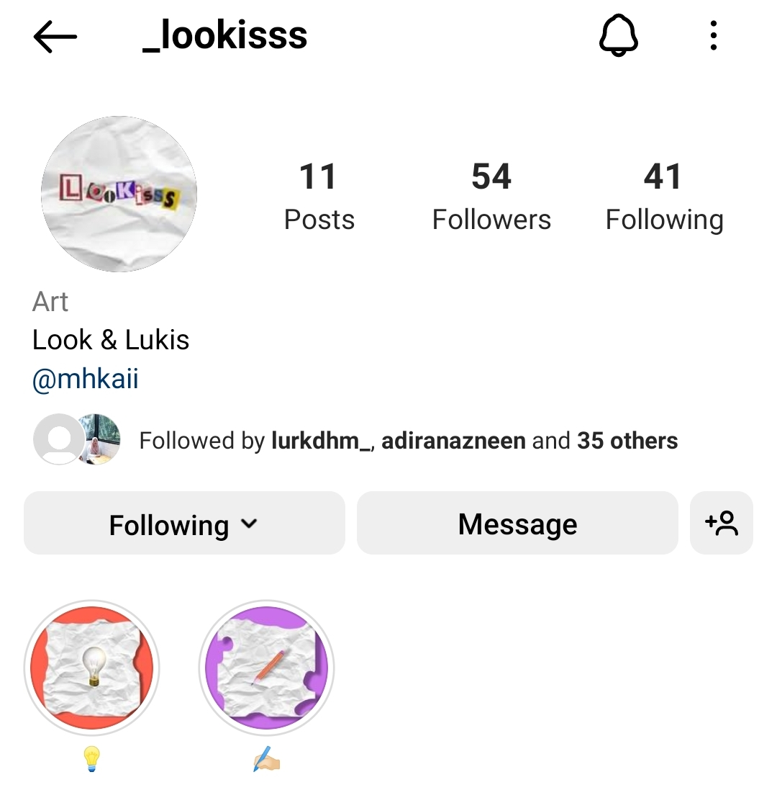
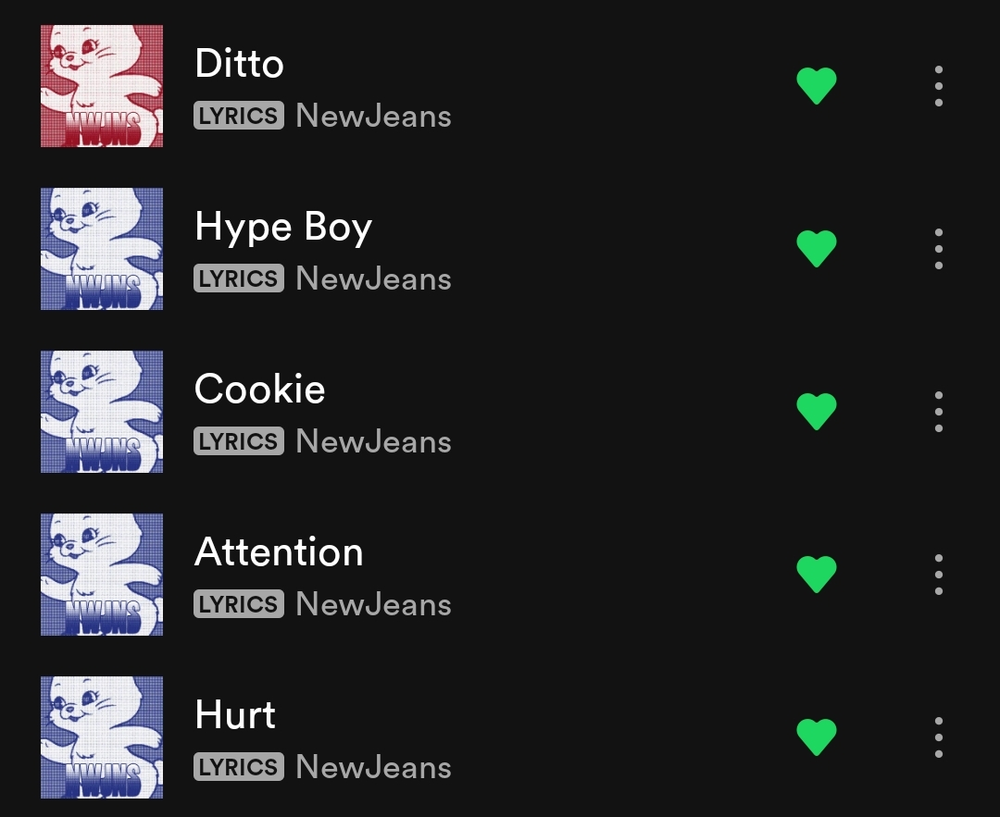

Hobbies
My hobbies
Drawing&Sketching

I like to draw and sketch, it is one of my favorite hobby because it can release a bit of my stress. I like to draw since 7 years old and i've join drawing competition before this. I never took any art tuition and mostly I learn by myself and watching through Youtube. I also have my own Art Instagram : @_lookisss
Listening to Music

This is very common hobby for everyone because everyone listen to music. I will listen to music during my revision , on my way to class and before i go to sleep.My favorite genre of music are Korean Pop & Ballad.